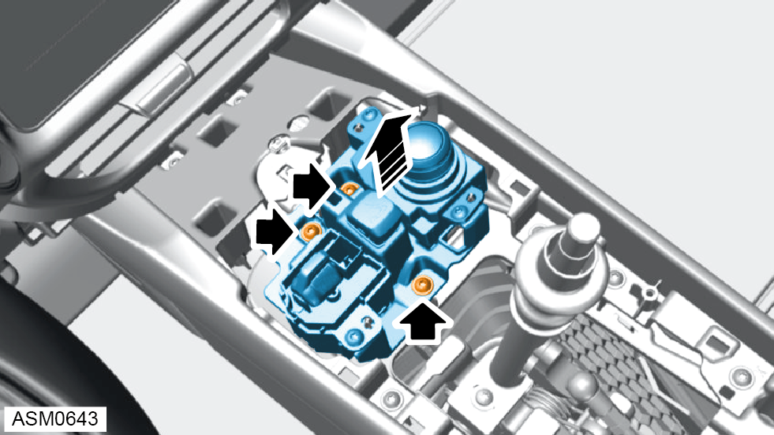
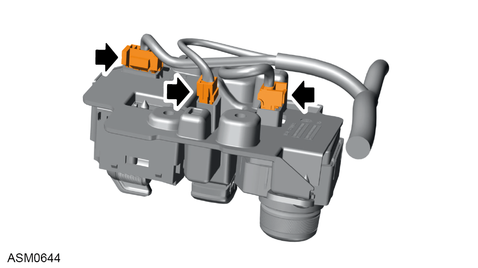
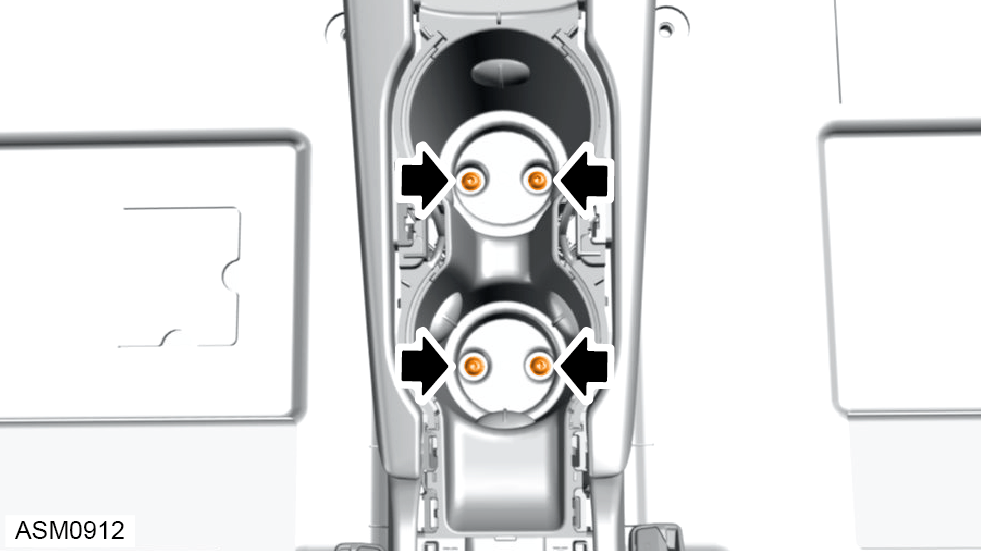
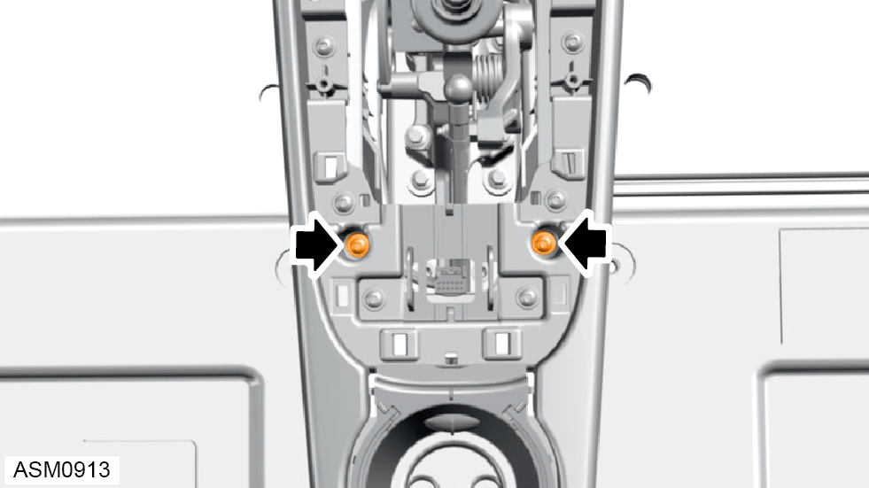
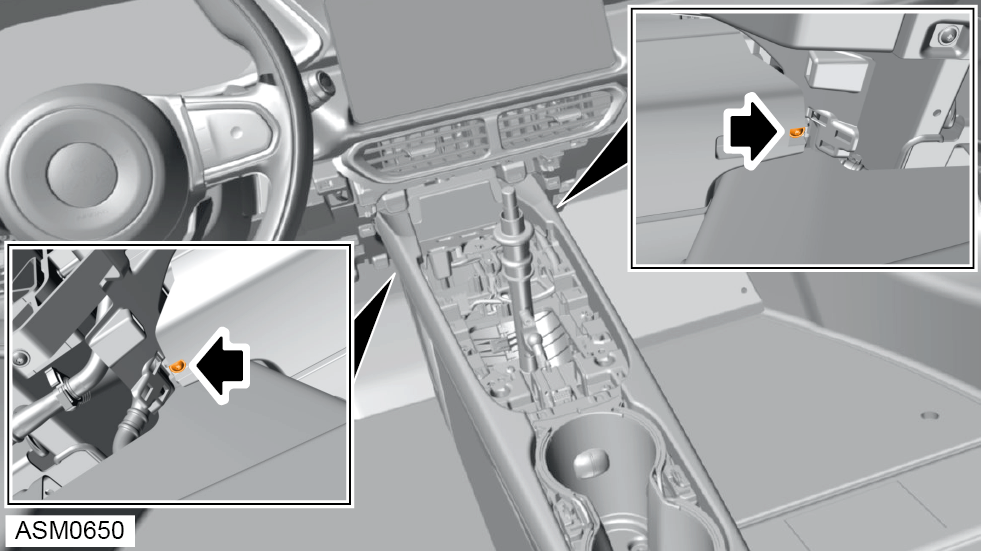
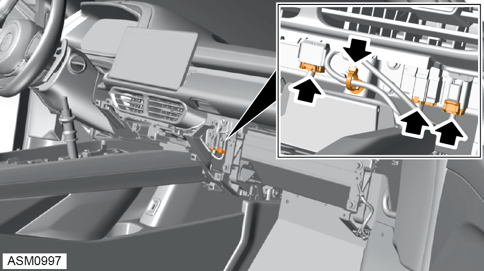
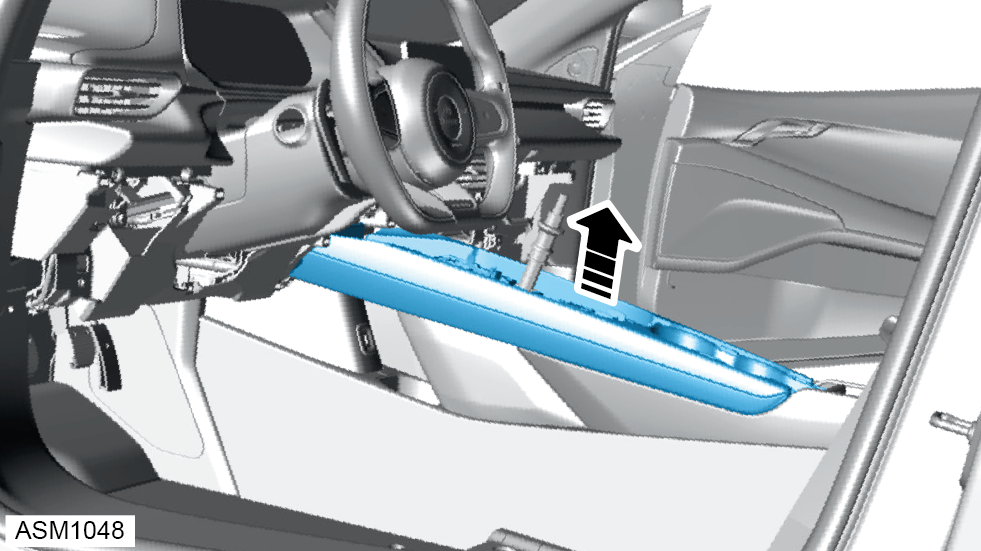
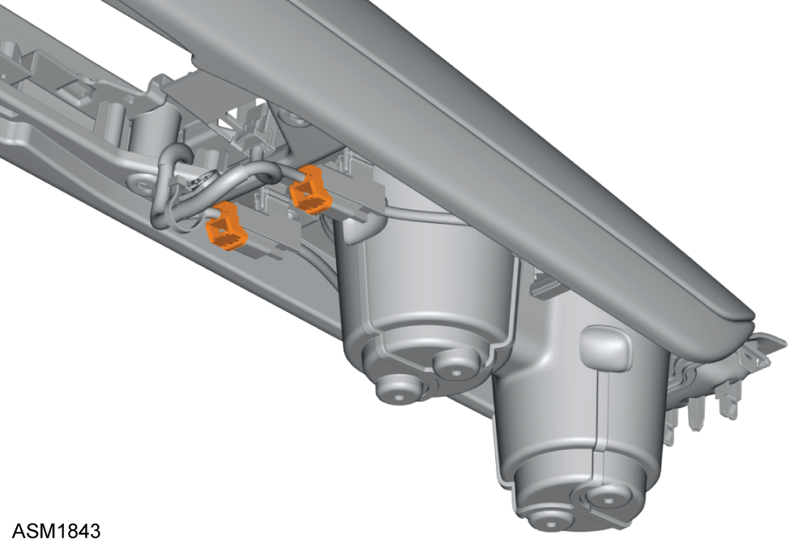
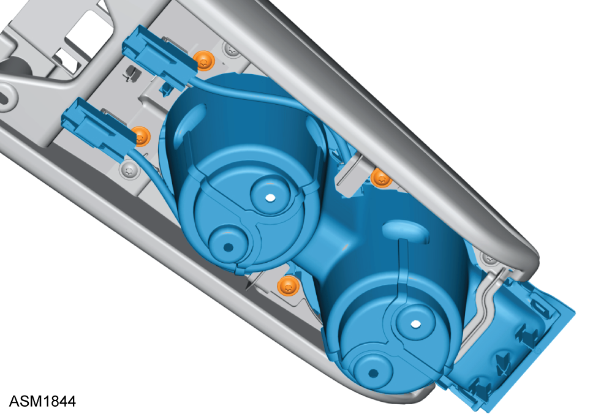
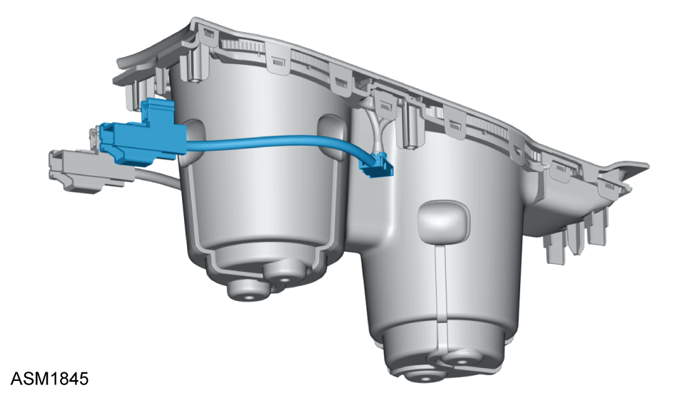

Lamp - Cup Holder - Left Side
Print
Operation Code: 17.17.27-02
Removal
- Remove switch panel assembly. Refer to procedure.
- Remove glove box assembly. Refer to procedure.
- Remove engine start switch. Refer to procedure.
- Remove rubber pads (x2) from cup holders.

- Remove M4x16 self tapping screws (x3) securing switch pack to centre console and remove switch pack. Torque 2 Nm.

- Disengage harness connectors (x3) from switch pack.

- Remove M4x16 self tapping screws (x4) securing cup holders to centre console. Torque 2 Nm.

- Remove M4x16 self tapping screws (x2) securing centre console upper section to lower section. Torque 2 Nm.

- Remove M4x16 self tapping screws (x2) securing centre console upper section to instrument panel. Torque 2 Nm.

- Carefully disconnect harness connectors (x3) from instrument panel harness.
- Disengage fir tree clip securing tunnel harness to underbody assembly.

- Remove centre console upper assembly.

- Disconnect harness connectors (x2) from cup holder lamps.

- Remove M4x16 self tapping screws (x4) securing cupholder to centre console upper assembly.
- Remove cup holder.

- Release cup holder lamp from cup holder.
- Remove cup holder lamp.
Installation
- Installation is the reverse of removal procedure.